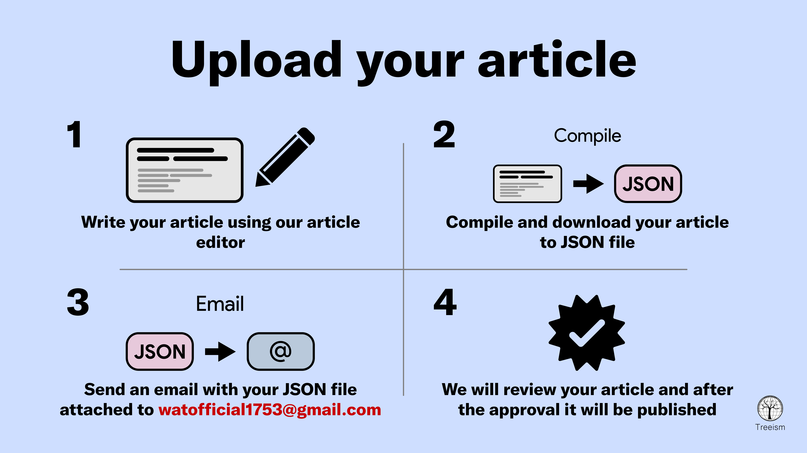

How to upload your own article
Requirements
- Your article should focus on issues facing the trans community and avoid discussing unrelated topics
- Make sure to provide enough information and support your controversial statements with links to trusted sources (for example linking biological studies to verified websites)
- Avoid expressing personal feelings or opinions in your article. Instead, aim for an objective, formal, and respectful tone
Please keep in mind that the current list includes only the most important requirements to follow
Upload your article in a few simple steps
Our articles are JSON files, you can generate your own JSON article file using our article editor, make sure that your article follow our requirements. Then you have to download your compiled JSON file and send it to watofficial1753@gmail.com. After that, we will review your article and if your article is approved, it will be published
